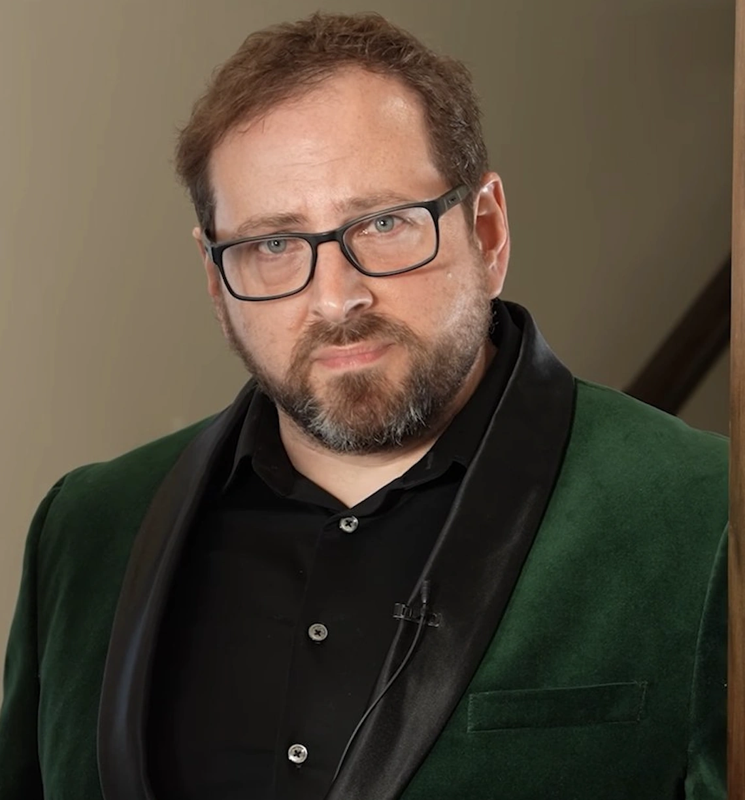

Sobre nosotros
Freddy Fazbear's Pizza es una propuesta de restaurante temático ficticio inspirada en la franquicia de videojuegos Five Nights at Freddy's. Este sitio reúne información del concepto, su menú y sus personajes.

Sobre Five Nights at Freddy's
Five Nights at Freddy's es una franquicia de videojuegos de terror creada por Scott Cawthon y lanzada en 2014. Su historia gira en torno a una pizzería donde los animatrónicos se comportan de manera extraña durante la noche.
Misión
Brindar una experiencia temática que combine entretenimiento, nostalgia y un ambiente inmersivo inspirado en Five Nights at Freddy's.
Visión
Ser una propuesta destacada por su ambientación, creatividad e innovación en experiencias temáticas.